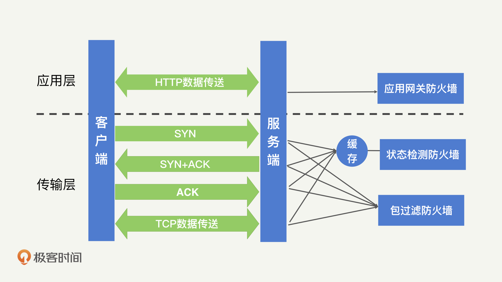
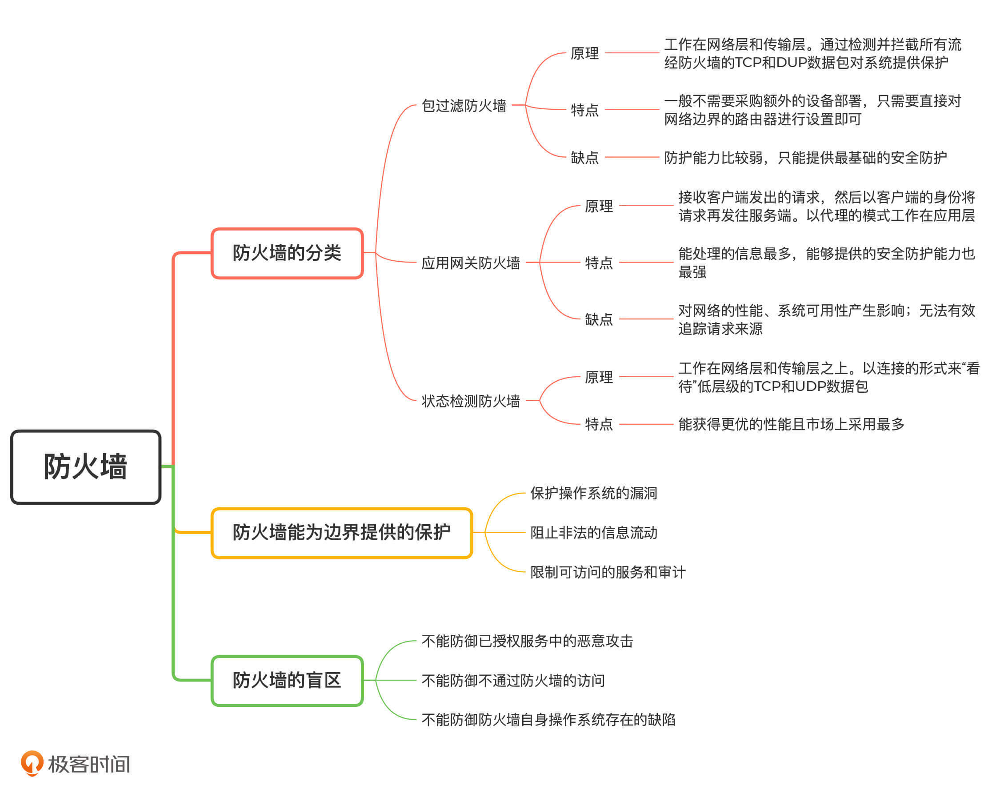

- 00 开篇词 别说你没被安全困扰过.md.html
- 01 安全的本质：数据被窃取后，你能意识到问题来源吗？.md.html
- 02 安全原则：我们应该如何上手解决安全问题？.md.html
- 03 密码学基础：如何让你的密码变得“不可见”？.md.html
- 04 身份认证：除了账号密码，我们还能怎么做身份认证？.md.html
- 05 访问控制：如何选取一个合适的数据保护方案？.md.html
- 06 XSS：当你“被发送”了一条微博时，到底发生了什么？.md.html
- 07 SQL注入：明明设置了强密码，为什么还会被别人登录？.md.html
- 08 CSRF_SSRF：为什么避免了XSS，还是“被发送”了一条微博？.md.html
- 09 反序列化漏洞：使用了编译型语言，为什么还是会被注入？.md.html
- 10 信息泄露：为什么黑客会知道你的代码逻辑？.md.html
- 11 插件漏洞：我的代码看起来很安全，为什么还会出现漏洞？.md.html
- 13 Linux系统安全：多人共用服务器，如何防止别人干“坏事”？.md.html
- 14 网络安全：和别人共用Wi-Fi时，你的信息会被窃取吗？.md.html
- 15 Docker安全：在虚拟的环境中，就不用考虑安全了吗？.md.html
- 16 数据库安全：数据库中的数据是如何被黑客拖取的？.md.html
- 17 分布式安全：上百个分布式节点，不会出现“内奸”吗？.md.html
- 18 安全标准和框架：怎样依“葫芦”画出好“瓢”？.md.html
- 19 防火墙：如何和黑客“划清界限”？.md.html
- 20 WAF：如何为漏洞百出的Web应用保驾护航？.md.html
- 21 IDS：当黑客绕过了防火墙，你该如何发现？.md.html
- 22 RASP：写规则写得烦了？尝试一下更底层的IDS.md.html
- 23 SIEM：一个人管理好几个安全工具，如何高效运营？.md.html
- 24 SDL：怎样才能写出更“安全”的代码？.md.html
- 25 业务安全体系：对比基础安全，业务安全有哪些不同？.md.html
- 26 产品安全方案：如何降低业务对黑灰产的诱惑？.md.html
- 27 风控系统：如何从海量业务数据中，挖掘黑灰产？.md.html
- 28 机器学习：如何教会机器识别黑灰产？.md.html
- 29 设备指纹：面对各种虚拟设备，如何进行对抗？.md.html
- 30 安全运营：“黑灰产”打了又来，如何正确处置？.md.html
- 加餐1 数据安全：如何防止内部员工泄露商业机密？.md.html
- 加餐2 前端安全：如何打造一个可信的前端环境？.md.html
- 加餐3 职业发展：应聘安全工程师，我需要注意什么？.md.html
- 加餐4 个人成长：学习安全，哪些资源我必须要知道？.md.html
- 加餐5 安全新技术：IoT、IPv6、区块链中的安全新问题.md.html
- 模块串讲（一）Web安全：如何评估用户数据和资产数据面临的威胁？.md.html
- 模块串讲（三）安全防御工具：如何选择和规划公司的安全防御体系？.md.html
- 模块串讲（二）Linux系统和应用安全：如何大范围提高平台安全性？.md.html
- 结束语 在与黑客的战役中，我们都是盟友！.md.html
- 捐赠
19 防火墙：如何和黑客“划清界限”？
你好，我是何为舟。
黑客在网络攻击时，第一步会扫描系统对外开放的端口，尝试发起连接或者攻击。比如，黑客可以扫描公司公网IP的22端口（SSH服务），然后尝试爆破登录。这个时候，通过防火墙，我们既可以屏蔽掉开放的22端口，也能拦截爆破的请求。所以，防火墙是面对外部入侵的第一道防线。
当然，这只是个简单的例子，现实中黑客的攻击手段更多，攻击场景也更加复杂。那这个时候，防火墙是如何为系统和网络提供保护的呢？具体来说，防火墙能够拦截哪些攻击呢？它的盲区又是什么呢？今天，我们就一起来学习，如何通过防火墙进行安全防护。
防火墙如何为网络提供保护？
你对防火墙应该不陌生。为了咱们统一一下思想，方便学习后面的内容，这里我还是再和你啰嗦几句。
防火墙是部署在网络边界上的一种安全设备，其概念比较宽泛，根据需求不同可以工作在OSI（Open System Interconnection，开放式系统互联） 网络模型的一层或多层上。一般情况下，防火墙会和路由器搭配使用（或者说路由器能够承担部分防火墙的功能），来对网络进行隔离。
根据实现方式和功能的不同，防火墙可以分为三种类型：包过滤防火墙、应用网关防火墙和状态检测防火墙。不同的防火墙在性能和防护能力上都有各自的特点，适用于不同的场景。下面我们一一来看。
1.包过滤防火墙
包过滤防火墙工作在网络层和传输层上。在这两个层级中，网络请求都是以TCP或者UDP数据包的形式进行流动的。因此，包过滤防火墙是通过检测并拦截所有流经防火墙的TCP和UDP数据包，来对系统提供保护。它能够获取到的信息包括：源IP和端口、目标IP和端口、协议号等。由于大部分的路由器甚至Linux系统本身（Iptables）也具备类似的功能。因此，通常情况下，我们不需要采购额外的设备部署包过滤防火墙，只需要直接对网络边界的路由器进行设置，就能够满足最基本的拦截需求了。
但是，在防护能力上，包过滤防火墙是比较弱的，它只能提供最基础的安全防护。这是因为，包过滤防火墙的过滤规则基本都是静态的。也就是说，包过滤防火墙只能够通过匹配IP地址和端口号，判断这些信息是否命中特定的规则来进行过滤。比如，禁止外网IP访问80和443以外的公司IP端口。所以，现在大部分的包过滤防火墙都进行了升级，引入了诸如“连接状态”等概念，也就变成了状态检测防火墙。
2.应用网关防火墙
应用网关防火墙以代理的模式工作在应用层。所谓“代理”，即接收客户端发出的请求，然后以客户端的身份将请求再发往服务端。大部分的系统和应用都是工作在应用层的，因此，应用网关防火墙能够获取到系统和应用的全部信息，从而实现更复杂的功能，如：内容监控、认证、协议限制甚至缓存。
在包过滤防火墙中，防火墙直接对流经的TCP和UDP包进行处理。而应用网关防火墙需要对TCP和UDP包进行解析，处理成应用层的数据协议，如HTTP。因此应用网关防火墙对于网络的性能会产生负面影响，而且不是所有的应用都能够很好地兼容代理的存在，所以部署应用网关防火墙有可能对系统的可用性产生影响。除此之外，在应用网关防火墙中，服务端看到的请求都来自于代理，这会导致服务端无法有效地追踪请求的来源。
尽管应用网关防火墙有这些潜在的危害存在，但是它能处理的信息最多，能够提供的安全防护能力也最强。由于Web攻击是黑客常见的攻击手段，因此，应用网关防火墙也逐渐演变成了专门的Web防火墙，在之后的课程中，我们会详细介绍，这里暂时就不多说啦。
3.状态检测防火墙
状态检测防火墙是包过滤防火墙的一种升级，它同样工作在网络层和传输层之上。状态检测和包过滤防火墙最大的不同在于，它会以连接的形式来“看待”低层级的TCP和UDP数据包。怎么理解呢？我来举个简单的例子。
当客户端发起一次完整的HTTP请求时，会需要进行“TCP三次握手”建立连接（SYN+ACK数据包），HTTP请求和响应的数据往往也是通过多个数据包才能完整发送。传统的包过滤防火墙只能基于每一个数据包进行判断，比如在“握手”的过程中，包过滤防火墙会分别看到SYN、SYN+ACK、ACK这三个数据包，并对每一个数据包进行判断。而事实上，这三个数据包（SYN、SYN+ACK、ACK）代表的是一次握手请求。所以，状态检测防火墙会尝试将这一连串的数据包组成一次完整的连接请求，从而获得一个更全面的视角，大大提高其安全性。
对比应用网关防火墙，状态检测防火墙通常不会尝试将数据包构建成高层级的数据，也就是说它不会尝试去解析整个HTTP请求中的内容。因此，状态检测防火墙能获得更优的性能。目前市面上普遍采用的，都是状态检测防火墙。- 
防火墙可以为网络边界提供哪些保护呢？
网络边界之间的信用层级通常是不一样的，因此，我们需要利用防火墙在网络边界上提供必要的保护，使得跨越边界的数据和连接相对可信。那防火墙究竟可以为网络边界提供哪些保护呢？下面，我就详细来讲一讲。
1.保护操作系统的漏洞
在操作系统的发展历程中，出现过很多臭名昭著的漏洞。比如：由于对网络请求处理不当，导致的DDoS攻击（如死亡之PING、SYN洪泛等）；由于高危服务默认开放导致的代码执行（如熊猫烧香扫描的是135和445端口的弱密钥）；由于服务漏洞导致的代码执行（如永恒之蓝利用的SMB漏洞）。
如果在这些漏洞曝光时，我们能即时更新操作系统补丁、关闭对应服务，那自然是能够避免系统和应用受到侵害。但是，在通常情况下，尤其是当公司扩大规模的时候，服务器管理员意识到问题并采取措施的这段响应时间，已经足够病毒或者蠕虫进行大规模的传播了。
这时，防火墙的存在就很有必要了。一方面，防火墙可以迅速对全网的服务器进行保护，拒绝向高危端口发起的请求，如Windows中的135、137和445等，这也就是我们之前所说的“虚拟补丁”。另一方面，更加智能的防火墙，能够检测到整体流量中的异常变化，比如，突然出现了针对某个端口的大量请求，这就说明系统或者应用中很可能出现了新的漏洞，这时，防火墙可以产生报警甚至自动对异常的请求进行拦截，及时避免网络中的操作系统受到攻击。
2.阻止非法的信息流动
在网络边界之间流动的数据，往往都会受到一定的规则约束。最著名的有中国的防火长城（Great Firewall）。防火长城的主要目的不是为了防止国外对中国发起网络攻击，而是根据法律法规，防止国内网民访问国外违法的数据信息。同样地，美国也存在类似的防火墙设备，比如：根据美国儿童网络保护法令（CHIPA），学校和图书馆的网络必须限制学生可以浏览的网页。
除了防止非法地获取数据，防火墙同样能够防止敏感数据的流出。比如，防火墙可以对部分关键词或者敏感词进行检测阻止其外流。如果数据安全做得好一些的公司，可以对公司内的全部数据打上标签，然后根据标签的安全等级对跨越安全边界的数据进行处理。
需要注意的是，防火墙能够提供的数据安全保护是有限的。原因在于，大部分防火墙都是用来处理较低层级的数据，且很多连接会对数据本身进行加密（VPN、HTTPS）。这就导致了防火墙实际能够看到的可识别数据并不多，拦截能力因此下降。其实，这种绕过防火墙的例子很常见，各类“梯子”能翻墙访问Google就是基于这个原理实现的。
3.限制可访问的服务和审计
防火墙作为安全策略的一部分，还可以帮助公司落地安全制度。公司所有对于网络方面的限制和要求，基本都可以在防火墙上进行实现。比如：限制外网开放的服务只能是HTTP服务，那么所有非HTTP的请求就会被拦截；再比如，防火墙也可以对带宽的使用进行限制，避免某个服务抢占全部的带宽资源。
除此之外，防火墙作为网络安全设备，它的日志功能通常比路由器等常规网络设备更加完备。因此，在网络攻击发生之后，我们需要进行事件调查时，防火墙日志是很关键的信息来源。
防火墙有哪些防御盲区？
我们知道，防火墙不仅是网络安全中很重要的组成部分，也是我们最为熟知的安全工具。但是，在安全领域中不存在绝对，所以防火墙对于某些攻击也同样无能为力。接下来，我会主要讲解防火墙不能防御的攻击手段，在了解这些攻击之后，我们才能提高对防火墙和网络安全的整体认识。
首先，防火墙只位于网络边界。因此，防火墙只能用来对跨越边界的请求进行检测和拦截。当请求通过后，后续发起的攻击请求对于防火墙来说，就是不可见的。比如，当黑客利用弱密钥，通过合法的SSH登录到服务器之后，就相当于穿透了防火墙的保护，之后黑客再通过SSH执行的命令，防火墙都无法检测和拦截。所以，防火墙不能防御已授权服务中的恶意攻击。
其次，尽管防火墙位于网络边界，但这并不意味着所有的请求都会经过防火墙。比如，直接通过物理网线接入到服务器，黑客就可以在不经过防火墙的情况下进入内网。在这种情况下，防火墙自然也起不到任何作用了。同样地，在网络内部发生的攻击行为，也不在防火墙的保护范围内。也就是说，防火墙不能防御不通过防火墙的访问。
最后，作为边界设备，防火墙自身其实是暴露在外界的。因此，防火墙会遭受到黑客的直接攻击。如果防火墙自身的操作系统存在缺陷，那么，黑客就能够直接攻击并控制防火墙，然后关闭防火墙的防护功能，轻松突破边界。正是因为如此，部分防火墙厂商会为防火墙设备专门设计和开发一个加固过的专用操作系统，以此来提高防火墙的安全性。
总结
好了，今天的内容讲完了。我们来一起总结回顾一下，你需要掌握的重点内容。
防火墙作为最基础的网络安全设备之一，广泛存在于各种网络边界上，是网络安全的第一道防线。
在业务相对简单时，我们可以通过IP、端口和协议等参数，配置简单的黑白名单规则来阻挡恶意的网络请求；在业务逐渐复杂时，开放的端口协议变多，我们对防火墙的技术实现和配置复杂度都会有较高要求，需要由专业的人员或者团队来进行维护。
因此，尽管防火墙是我们最熟悉的安全设备，但实际上，防火墙是一个专业性较强的安全产品，开发或者运维人员一般不需要对其进行直接操作或者配置，具体的部署和配置工作都是交给防火墙厂商来完成和定期维护的。- 
思考题
最后，给你留一个思考题。
你可以检查一下你的服务器或者网络设备中，对外开放的端口有哪些。这些端口中，有哪些不需要对外开放，有哪些可以限制源IP？你能否通过防火墙（或者路由器、Iptables等）对这些端口进行限制呢？
欢迎留言和我分享你的思考和疑惑，也欢迎你把文章分享给你的朋友。我们下一讲再见！
© 2019 - 2023 Liangliang Lee. Powered by gin and hexo-theme-book.